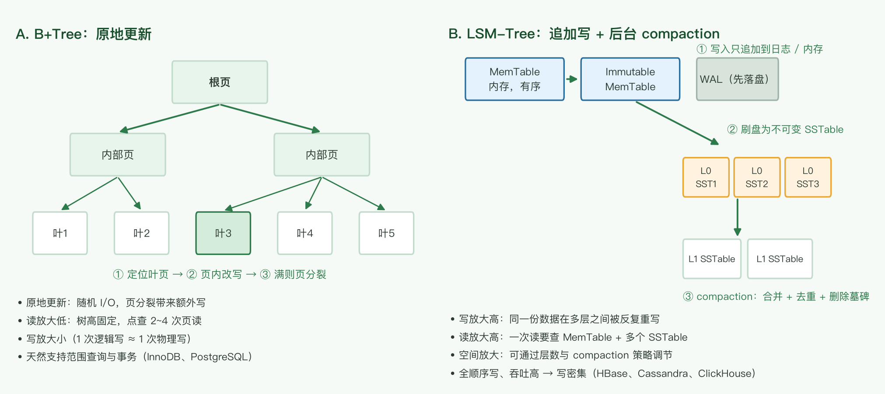

← 返回索引
🗃️ 数据存储选型
组件选型三篇之二：数据库怎么选。缓存见 缓存与消息队列选型，分析栈与数仓见 数据处理与 OLAP。
1. 选型的九个考虑要点
| # | 要点 | 说明 |
|---|
| 1 |
access pattern（读 + 写） |
通常起决定作用：应用的功能性访问方式是刚性的，反向决定 DB。读形态见下表；写形态看更新粒度（整行覆盖 → B+Tree，追加式 → LSM / 时序库）；读写比：读多写少 → 缓存，写多读少 → LSM；热点与数据倾斜直接决定分片键。不能只定性，还要给 QPS / 热点 / 读写比的量级 |
| 2 |
数据量大吗？需要水平扩展吗？ |
单机放不下（含索引、含预留增长）才谈分片。先回答「单机能不能扛」 |
| 3 |
schema 固定吗，经常改变吗？ |
结构化固定字段 → 关系库；非结构化、每篇不同的字段 → 文档库 |
| 4 |
性能要求 |
明确 tp50 / tp99 目标，而不是「要快」 |
| 5 |
支持的 API |
insert / update、upsert、批量写、事务写、聚合过滤。聚合需求强 → 列存 |
| 6 |
存储数据大小 |
大对象以 4 KB 为界（一个磁盘页大小），超过则单条记录跨页；大对象 + range query 还要算服务端转换的内存压力 |
| 7 |
一致性要求 |
是否需要「读到自己写的最新值」？操作是否需要全局有序？之一为是 → 强一致性要求 |
| 8 |
Durability |
写成功是否代表一定不丢？单副本 / 多副本 / 异步复制的差别就在这里 |
| 9 |
graph store |
实体间关系特别复杂时用。社交不只是「朋友关系」，还有「在同一家公司工作过的人」这类多跳查询——关系模型要为每种新查询建新表 |
读形态 → 存储类型
| 读形态 | 示例 | 倾向 |
|---|
| 主键 / 任意键值查询 | SELECT * FROM t WHERE id = ? | KV 库（DynamoDB、Redis） |
| range query | 按时间区间扫日志 | 有序存储：B+Tree 索引、DynamoDB sort key、Kafka 分区日志 |
| spatial query | 10 km 内的商店 | 空间索引（Elasticsearch、PostGIS） |
| full scan / 分页遍历 | 全量对账、报表导出 | 列存 + 分区（ClickHouse）；亿级全扫交给离线批处理 |
| full text search | 商品标题搜词 | Elasticsearch |
| 向量相似度 | 以图搜图、召回候选 | 向量库（见 第 4 节） |
| 多跳关系 | 好友的好友、资金链路 | 图数据库（Neo4j） |
三层模型：access pattern 决定存储家族 → 事务 / 一致性 / durability 是硬约束、有否决权（一个否决项就能盖过家族选择，比如银行账本点写点读也不得不选关系库）→ 规模（数据量 / QPS）决定部署形态与引擎参数。三者不是线性重要性排序。
反向决策的边界：access pattern 会随产品演化（加报表、加搜索、加新查询），反向决策容易过拟合当下。关系库（schema + SQL + 索引）吸收未知查询的能力强于 KV / 文档库，NoSQL 一旦 access pattern 变了迁移成本更高。所以反向决策当下，但用「未来 query 会不会变」做压力测试；另有团队熟悉度、生态等软约束。
2. 关系数据库内部选型
- 能否单机支持？先回答这个。单机 + 只读副本 + 缓存能覆盖绝大多数业务。
- 是否需要 NewSQL？例如 TiDB、Spanner、CockroachDB。自己分表并不是好方案——分片键、跨片查询、在线扩容、分布式事务都要自己实现，应该优先交给 NewSQL 或成熟的数据库中间件。
- 是否有成熟的分片中间件？ShardingSphere、Vitess 等；代价是引入一层代理与额外的运维复杂度。
判断顺序：单机（主库 + 只读副本）→ 读写分离 + 缓存 → NewSQL → 中间件分片。「自研分表」排在这条链的最后，且通常意味着前四步都没做完。
3. 几类数据存储对比
3.1 关系数据库
代表：MySQL、PostgreSQL、Oracle
| 优点 | 缺点 |
|---|
| 有 schema，能很好地表达表中不同实体之间的关系 |
复杂 join 场景下读写性能相对较差 |
| SQL 能快速实现复杂查询（join、聚合、窗口函数） |
横向扩展不易——但已有 NewSQL（TiDB 等）补上这一块 |
| 支持事务（ACID） | — |
| 对 many-to-many 的建模支持好 | — |
3.2 NoSQL：非关系数据库的统称
共同优点：一般支持 automatic sharding，读写性能高得多。
共同缺点：支持的查询模式简单；复杂查询往往要自己实现；不支持或弱支持 schema。
| 类别 | 代表 | 定位与取舍 |
|---|
| KV |
Redis、Memcached、DynamoDB |
Redis 的 value 还支持 List / Set / Hash / Sorted Set 等复杂结构，不再只是 KV |
| 文档 |
MongoDB |
适合「有 schema，但每篇文档结构不同」的数据（如文档协作类应用）。注意 schema-less 不等于没有数据形状约束——约束被搬到了应用层 |
| 图 |
Neo4j |
社交等复杂图模型；多跳关系查询是它的主场 |
| 宽列 / 列族 |
HBase、Cassandra |
Bigtable 模型：rowkey 实时查询，条件 scan 与聚合满足分析需求。写密集型，读取性能一般；性能不如 Redis / Memcached，但在海量数据 + 持久化存储上强得多。分片与 MapReduce 分析比 MongoDB 简单。注意与 Hive 无关——Hive 是在 Hadoop 上提供数据仓库功能的另一套东西 |
| 分布式搜索 |
Elasticsearch |
强大高效的字段搜索 / 过滤，支持大数据量；ES 也可以当作 data store 使用 |

宽列库与写密集场景通常基于 LSM-Tree：追加写换吞吐，代价是读放大与写放大
B+Tree vs LSM：三种放大的取舍（RUM 猜想——读放大、写放大、空间放大三者不可兼得）：
三个放大的定义（把「逻辑操作」折算成「物理代价」）：
- 读放大：1 次逻辑读，实际要读多少物理块 / 文件（I/O 次数或字节）。B+Tree 点查只碰 2~3 层页；LSM 要查 memtable + 多层 SSTable，Bloom filter 只能减少、不能消除候选文件。
- 写放大：应用写 1 字节，介质实际写多少字节（含 WAL、整页重写、compaction）。B+Tree 小改重写整页（16 KB 页改 100 字节 ≈ 160x）；LSM 追加写便宜，但 compaction 把同一数据反复重写多层。
- 空间放大：物理占用 / 逻辑有效数据。B+Tree 受页填充率（~50–70%）限制；LSM 在 compaction 前保留多版本 + tombstone，compaction 跟不上时空间放大更高。
三者由 compaction 策略互相兑换：leveled compaction 层更有序 → 读放大降、写放大升；tiered compaction 少合并 → 写放大降、空间 / 读放大升。
| B+Tree | LSM-Tree |
|---|
| 读放大 | 低（O(log N)，2~3 层） | 高（多层 SSTable，靠 Bloom filter 缓解） |
| 写放大 | 高（原地更新重写整页） | 低~中（追加写，代价转给 compaction） |
| 空间放大 | 中（页填充率 50–70%） | 中~高（多版本 + tombstone 等压缩） |
| 定位 | 读优化 | 写优化 |
机制差异：B+Tree 是原地更新（改一条 100 字节记录要重写整页）；LSM 是追加写 + 后台 compaction，没有真正的 update，只有「写新版本 + 打 tombstone」。
业界采用：
- 选 LSM（写多 / 追加 / 规模大）：Facebook LevelDB → RocksDB → MyRocks（把 LSM 装进 MySQL，报告相对 InnoDB 约 2 倍压缩、写放大显著下降）；Google LevelDB / Bigtable；Cassandra、HBase、InfluxDB 的 TSM；TiKV（关系库 TiDB 的存储层却是 LSM）；DynamoDB（点查便宜、scan 贵正源于此）。
- 选 B+Tree（读多 / 事务 / 二级索引多）：MySQL InnoDB、PostgreSQL、SQLite、Oracle、SQL Server。
除读写比外的决策维度：
- 二级索引数量——B+Tree 的护城河（见下）。
- 更新形态：原地小改 → B+Tree；append / upsert → LSM。
- 尾延迟：LSM compaction 造成写停顿与读尖峰，延迟敏感系统是硬伤。
- SSD 寿命：写放大直接折算成擦写次数。
- 压缩率：SSTable 整块压缩通常优于页压缩。
- 工作集是否进内存：全进 RAM 则读放大差异被抹平，写放大成为唯一区分项，LSM 占优。
二级索引数量为什么是分水岭：索引不是免费的，多一个索引 = 多一份写成本 + 存储。
B+Tree：二级索引是一棵指向主键的独立 B+Tree，多一个索引 = 多一次原地页写（InnoDB 用 change buffer 缓冲成顺序写），读仍是 O(log N)，所以能容忍 5、10、20 个索引。
LSM：每个二级索引都是一整套独立的 LSM 树（自己的 memtable + SSTable + compaction），每次写进 N+1 棵树、写放大倍增，读还要付读放大。所以 Cassandra 弱化二级索引，靠反范式 / 物化视图（数据复制多份，一次写、单 key 读）替代——本质是「用写换索引」。
3.3 NewSQL
把 NoSQL 的性能与可扩展性带回关系数据库：保留 SQL 与事务，用分布式共识协议（Raft / Paxos）做分片与副本。代表：TiDB、Google Spanner、CockroachDB。
3.4 多模型数据库
结合多种模型于一体。原文作者的观点是：还不如 dual write 到不同类型的数据库。
补充：dual write 自身有一致性问题——两次写之间崩溃就会出现双写不一致，生产上通常需要 Outbox 表或 CDC 管道来保证最终一致。多模型库的价值在于共享同一个事务边界，代价是每个模型都不如专用库强。这条取舍必须显式做，而不是默认 dual write 更简单。
3.5 OLAP
很多也是列式存储，但与传统认知不同，现代产品普遍支持 ad-hoc query。
- ClickHouse：列存 + 向量化执行 + MergeTree，单表聚合极快。
- HybridDB（现已演进为 AnalyticDB，见 第 8 节）：
- 任意维度智能组合索引，使用方无需单独自建索引
- 百亿大表查询毫秒级响应
- 兼容 MySQL BI 生态，完备 SQL 支持
- 原文评价：当时已知的「任意维度组合过滤 + 百亿级数据量 + 毫秒级响应」的唯一选择
3.6 性能可预测性
为什么重要：平均值会撒谎——系统是被「尾部」打垮的，不是被「平均」。9 个请求 1ms + 1 个请求 1s，平均 ≈100ms 看着没问题，但那个 1s 的往往是下单 / 支付。尾延迟还会被链路放大：N 层服务每层 p99 独立，整条链路「至少一层踩尾」的概率是 $1-0.99^N$（N=10 ≈ 9.6%，N=100 ≈ 63%，见《The Tail at Scale》）。可预测性失效还会让 Little 定律里的 W 不可控，连接池被打爆、超时重试、级联雪崩。
雪崩例子：下单接口常态 p99=5ms、连接池 100；某天 LSM major compaction（或 InnoDB checkpoint）使单查飙到 2s → 连接被慢查询占满 → 排队 → 1s 超时 → 重试翻倍 → 连接池打满 → 服务雪崩。事后监控：平均延迟几乎没涨，p999 从 20ms 飙到 2s。
什么情况下会发生可预测性问题：
- 后台任务与前台争抢：LSM compaction、InnoDB checkpoint / 脏页刷盘、PostgreSQL autovacuum、备份 / 快照 / 索引重建——最常见的抖动源。
- 运行时停顿：JVM 系（Cassandra / HBase / ES / Kafka）的 Full GC；热点行锁竞争；长事务 / 大查询占住 buffer pool 与 IO。
- 数据分布问题：热点 key（排行榜 / 大 V / 热门商品）、分片键选错导致少数分片过载。
- 容量逼近边界：工作集 > RAM（随机读打盘）、连接数 / CPU / 磁盘接近饱和（排队延迟指数上升）、云盘 IOPS 限流 / noisy neighbor。
- 流量突变：缓存击穿 / 雪崩、冷启动（工作集未预热）、秒杀 / 热点事件突发流量。
- 扩缩容与迁移：分片 rebalance / 在线扩容时的数据搬迁影响在线流量。
选型启发：
- 把「尾延迟可预测性（p99/p999 + 方差）」列为与吞吐、一致性同级的硬指标。
- 延迟敏感路径选可预测引擎：在线 OLTP → B+Tree（无后台 compaction 大抖动）；必须用 LSM 时主动治理抖动（错峰 / 限流 compaction、监控 write stall、预留余量）。
- 平均性能 ≠ 可预测性：B+Tree 平均写吞吐低但方差小，LSM 平均高但尾部抖——前者定吞吐上限，后者定 SLA。
- 工作集进内存是治抖的通用手段：热数据全在 RAM，延迟曲线自然平滑。
- 留余量 + 用尾部设阈值：别在接近 100% 利用率跑；超时 / 熔断 / 告警阈值基于 p99/p999 而非平均。
- 监控盯分布不盯均值：看 p50/p99/p999 与延迟直方图。
RDS vs KV 的可预测性：同为磁盘持久化时，LSM 型 KV（RocksDB / Cassandra / DynamoDB）比 B+Tree 型 RDS 更严重——compaction（+ JVM GC）是 RDS 没有的、周期性、难以消除的硬抖动源；RDS 的抖动主要来自事务锁竞争，属于应用可规避的软问题。若 KV 指 Redis（内存），结论反过来：Redis 延迟最可预测，问题形态变成单线程阻塞。
4. 向量数据库
用于搜索某个向量的 k-nearest neighbors（k 近邻），即向量的 similarity 检索。
为什么需要它
机器学习中大量问题会把对象表示为低维向量——word embedding、图片 embedding、用户 / 物品 embedding。推荐系统等场景需要「找出与这个向量最相似的其他向量」，而传统数据库不支持这类查询：B+Tree 索引对高维距离函数无能为力，只能退化为全表扫描。
典型实现
| 方案 | 特点 |
|---|
| pgvector | PostgreSQL 扩展：事务与向量检索同库，运维成本最低，适合数据量与检索规模中等的场景 |
| Milvus / Qdrant / Weaviate | 专用向量库：规模更大、索引与分片能力更强，代价是多一套系统 |
| FAISS | 库而非服务：适合离线批量检索，不提供持久化与在线服务能力 |
索引与取舍
- HNSW（图索引）：召回率高、查询快，内存占用大、构建慢。
- IVF-PQ（倒排 + 乘积量化）：省内存，需接受精度损失。
- 检索系统必须同时看四个指标：召回率、延迟、内存、更新代价。四者不可兼得，必须按业务定优先级。
5. 多存储组合
原文最重要的结论：应用设计中可以同时使用多个存储系统，按各自擅长的查询模式分工。
| 组合 | 分工 |
|---|
| DynamoDB + Elasticsearch | DDB 做点查，ES 做多条件检索 |
| MySQL + Elasticsearch | 同样的旁路索引模式 |
| 关系库 + Redis | 热数据缓存（见 缓存读写模式） |
| 对象存储 + 数据仓库 | 冷数据离线分析（见 数据处理与 OLAP） |
6. 选型决策树
flowchart TD
A[先看 access pattern
读 + 写] --> B{主查询形态是?}
B -->|主键点查 / KV
无复杂条件| KV[(KV 存储
DynamoDB · Redis)]
B -->|固定 schema
事务 + 多表关联| C{单机能扛?}
B -->|文档形态
每篇结构不同| DOC[(文档库
MongoDB)]
B -->|大范围扫 + 聚合| OLAP[(列存 OLAP
ClickHouse · AnalyticDB)]
B -->|全文检索 / 空间查询| SEARCH[(搜索库
Elasticsearch)]
B -->|多跳关系| GRAPH[(图库
Neo4j)]
B -->|向量相似度| VEC[(向量库
pgvector · Milvus)]
C -->|能| RDB[(单机关系库
MySQL · PostgreSQL)]
C -->|不能，需要跨行事务| NEWSQL[(NewSQL
TiDB · Spanner)]
C -->|不能，追加式 / 写入极密集| WIDE[(宽列 / LSM
HBase · Cassandra)]
classDef root fill:#e3f2fd,stroke:#2196f3
classDef decision fill:#e8f5ec,stroke:#4caf50,font-weight:bold
classDef store fill:#d4edda,stroke:#2d7a4a
classDef special fill:#fff3e0,stroke:#e8a838
class A root
class B,C decision
class KV,DOC,GRAPH,SEARCH,VEC,RDB,NEWSQL store
class WIDE,OLAP special
先按 access pattern（读 + 写）分流：读形态选家族，更新粒度与写密集选引擎；再在关系库分支上判断单机 / 分布式
7. 选型清单与容量估算
决策清单
- access pattern 的读形态是什么？（主键 / 范围 / 全文 / 空间 / 向量 / 聚合）
- 单机能否承载？（数据量 + 索引 + 预留增长 vs 单机可用存储）
- 需要跨行事务吗？需要 → 关系库或 NewSQL。
- 需要多强的读一致性？（读己之写 / 全局有序）
- 写入是点写 / 批量 / 追加？写密集或追加式 → LSM 系。
- 能否接受第二份数据副本？能 → 旁路索引组合。
容量估算
估算的前提是先把 access pattern 量化——QPS、热点 key、读写比数值；形态对了但量级没给，公式无法代入。
存储总量（含索引开销与副本）：
$$D = N \times S \times (1 + r_{idx}) \times r_{replica}$$
$r_{idx}$ 为索引膨胀系数（通常 0.2–0.5），索引密集的表可达 1 以上。
并发连接需求由 Little 定律给出：
$$L = \lambda \times W$$
即 并发数 = QPS × 平均响应时间。例如 $2000\ \text{QPS} \times 20\ \text{ms} = 40$ 个并发连接在途——这是连接池大小的下界，同时连接池必须小于数据库的最大连接数。
单机可行性的真正判据是「工作集能否放进内存」：若热数据 $D_{hot} < \text{RAM}$，B+Tree 大部分命中内存页，磁盘只承担顺序写；若 $D_{hot} > \text{RAM}$，随机读会直接打到磁盘，tp99 显著劣化。
8. 勘误与过时组件
| 原文说法 | 问题 | 现在的说法 |
|---|
| 「HBase 作为文档型 NoSQL」 |
HBase 不是文档型，是宽列 / 列族（wide-column）存储 |
宽列存储：rowkey 排序 + 列族；文档型是 MongoDB 那一类 |
| 「动态添加列，要存储列的多个版本，可能很多列为空」 |
表述含糊，易误解为大量空值占空间 |
列族 + 多版本是 Bigtable 模型；单元格稀疏存储，缺失的列不占空间 |
| 「ES 的数据是准实时更新」 |
描述不准：ES 不是「更新慢」，而是「写入后可见有延迟」 |
默认 refresh_interval=1s 后才可被搜索；需要立刻可见可用 ?refresh=wait_for |
| 「HybridDB」 |
产品已演进 |
AnalyticDB（MySQL 版 / PostgreSQL 版） |
| 「多模型数据库还不如 dual write」 |
结论片面 |
dual write 有一致性问题（需 Outbox / CDC）；多模型库的价值是共享事务边界 |
| 「自己分表这种方法并不好」 |
结论仍成立，但生态已变化 |
优先 NewSQL（TiDB / Spanner）；或成熟中间件 ShardingSphere / Vitess |
| 「leveldb 写性能很强」 |
作为库已基本被取代 |
演进为 RocksDB，被 TiKV、MyRocks、CockroachDB 等广泛使用 |
结论
- access pattern 先于产品：先写清楚读（主键查、范围扫、全文检索、空间查询、向量相似度）+ 写（点写 / 批量 / 追加 / 更新粒度）+ 读写比与热点，再谈用哪个库；但 access pattern 会演化，别过拟合当下。
- 先问「单机能不能扛」，再谈分片；能单机 + 只读副本就不要自研分表。
- 一致性、durability、读写比是三个必须显式回答的问题，它们直接决定引擎类型（B+Tree vs LSM）与副本策略。
- 不要只选一种存储：多存储组合是常态，代价是多一份一致性责任，必须有同步与补偿方案。
- 估算用两个公式：容量 $D = N \times S \times (1 + r_{idx}) \times r_{replica}$，并发 $L = \lambda W$。